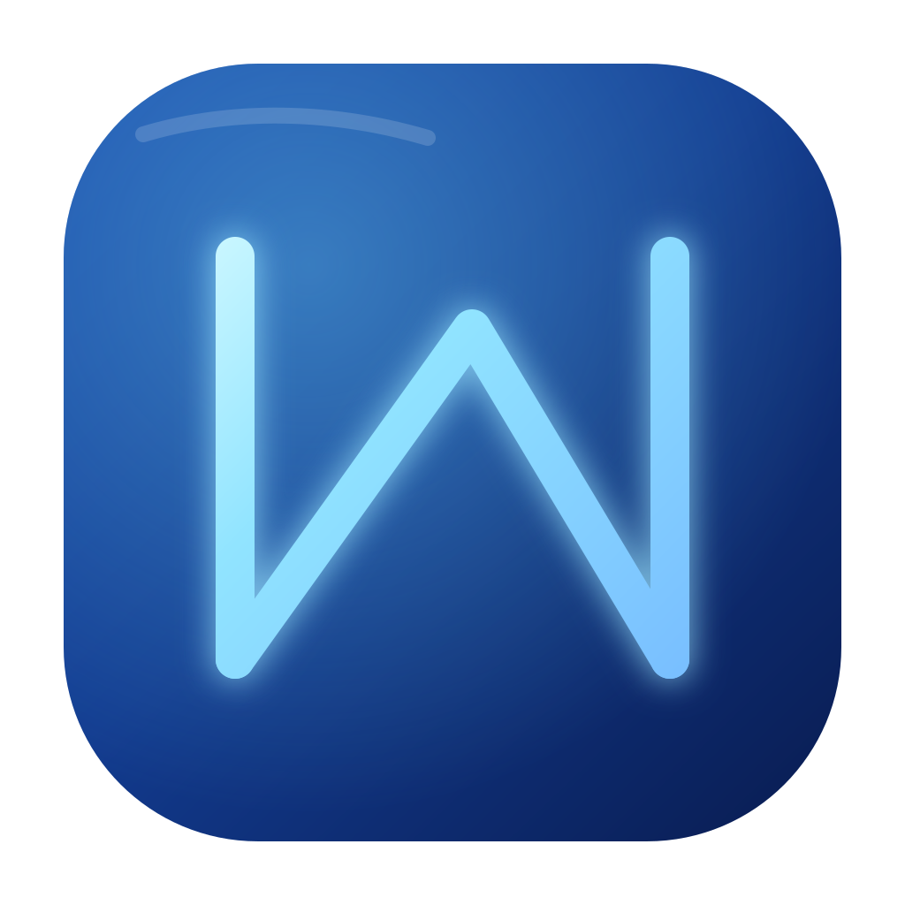
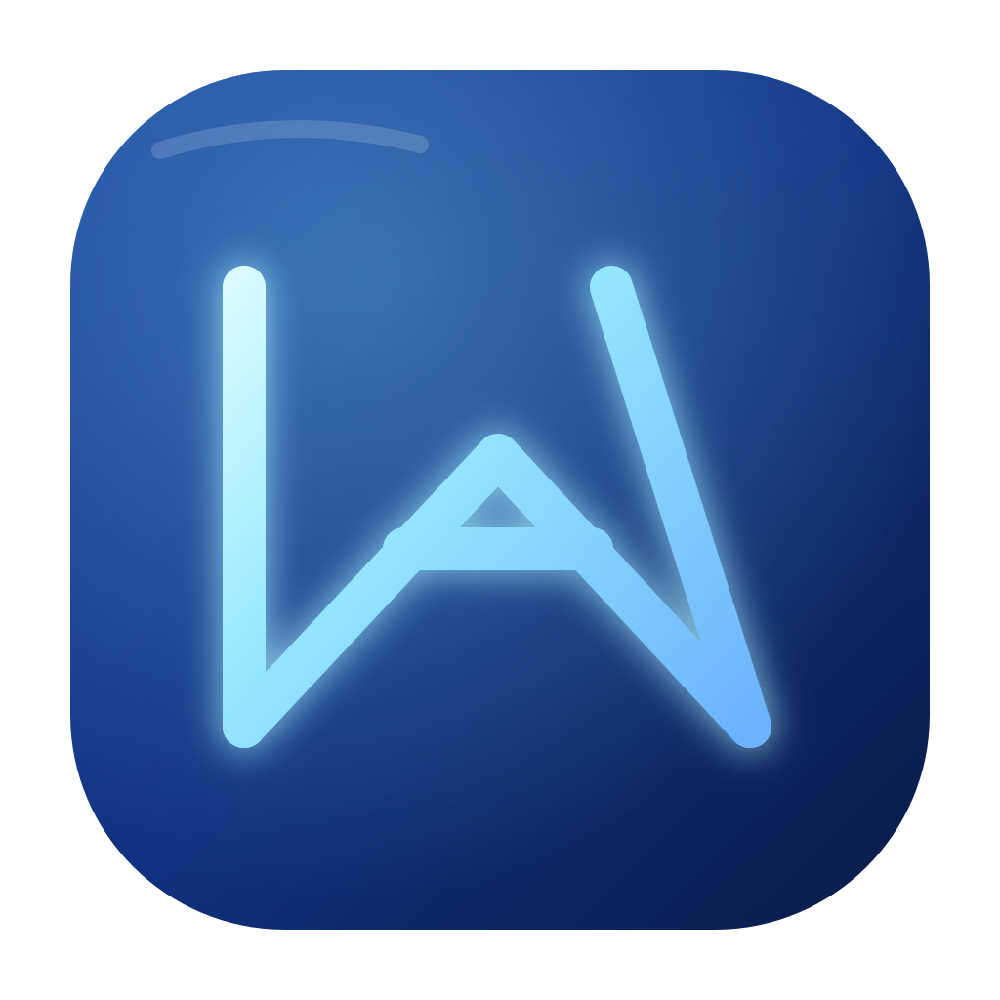
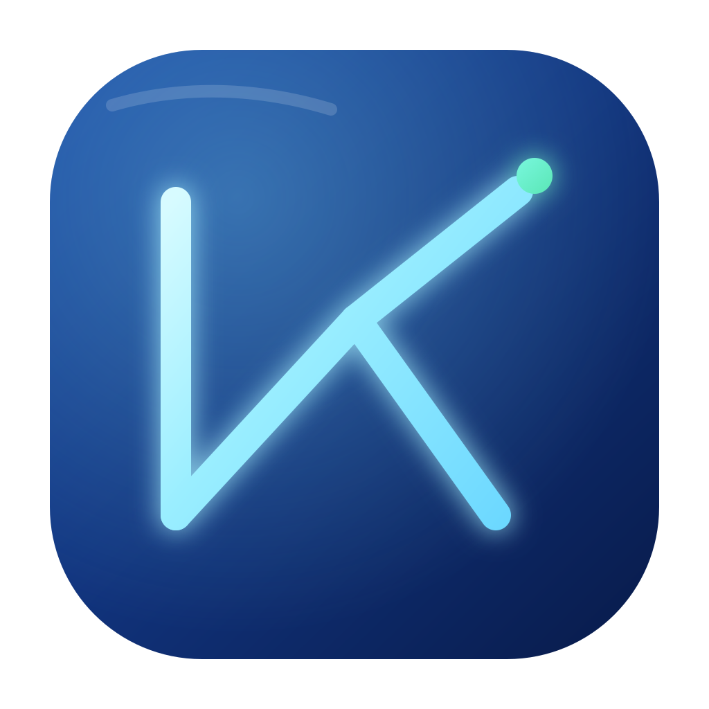

 Option A Classic N The safest desktop-app direction. Clear, stable, and easy to recognize at small sizes.
 Option B NA Monogram A merged N and A mark. More like a brand logo, with slightly stronger personality.
 Option C Agent Node Keeps the minimal lines and adds one signal node to hint at connection and execution.